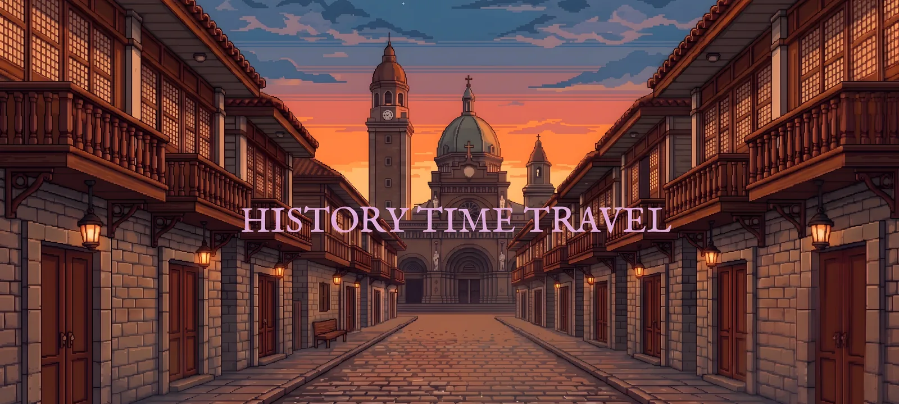
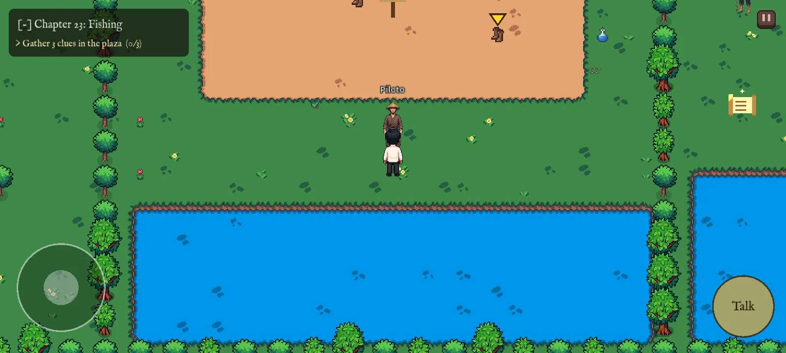
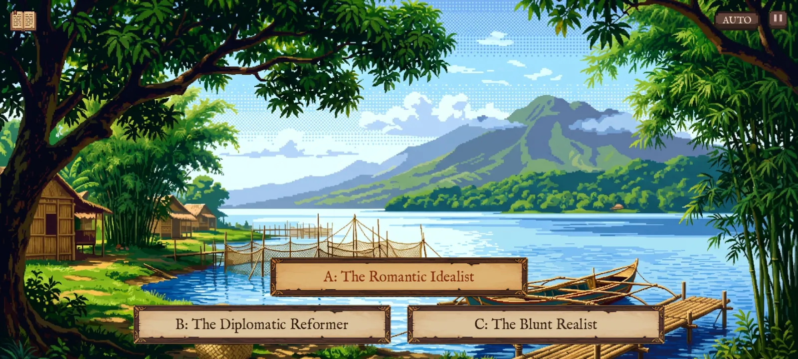
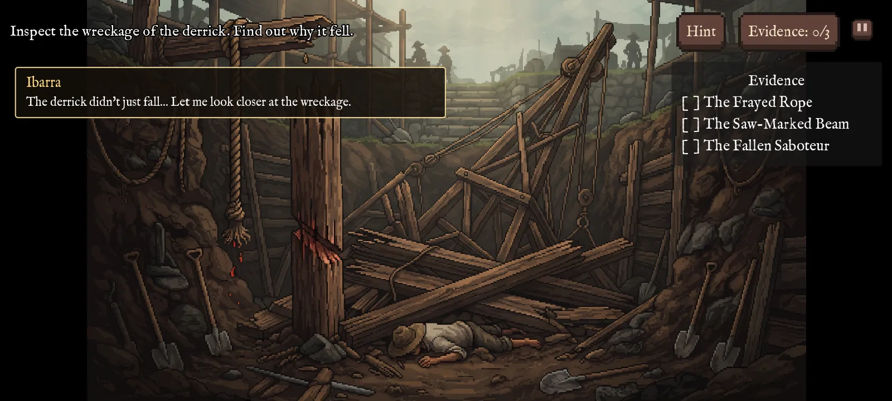
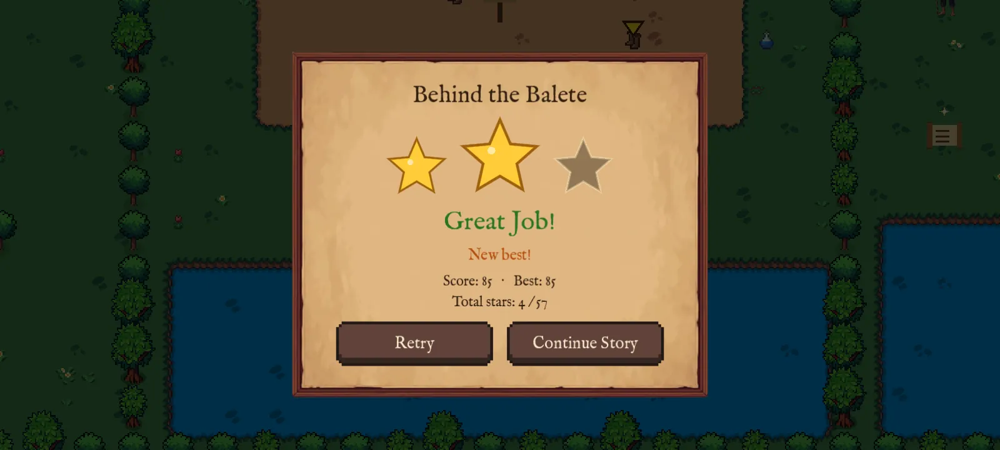
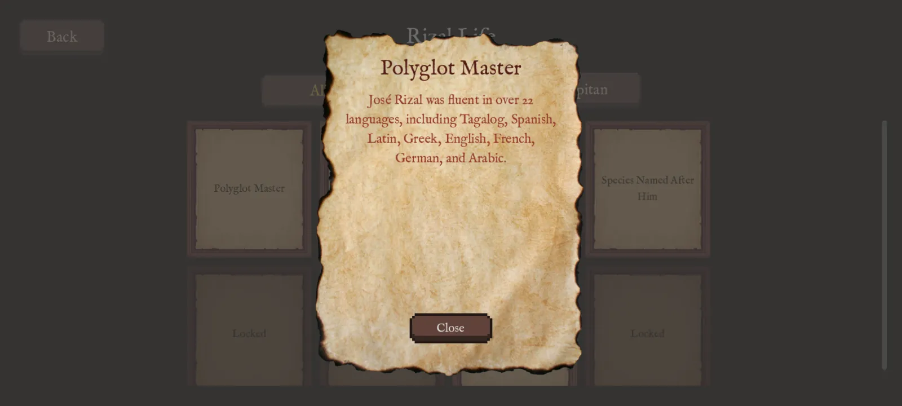

The Game
Step into Noli Me Tángere and El Filibusterismo as the people who lived them.





- Pick a book, then a chapterNoli or Fili
Five chapters from each novel, each with a synopsis and its historical context.
- Play as the main characterIbarra, Elías…
Ibarra, Elías, Basilio, Plácido, Isagani and others, in a top-down 2D world.
- Talk and decideDialogic
Conversations with portraits and choices. Some choices stay locked until you uncover an earlier part of the scene.
- Follow the questsObjectives
On-screen objectives follow the chapter's events, and a gold mark shows who you need next. Gates stay closed until the story opens them.
- Four-step tutorialFirst time
Learn to move, follow a trail, inspect objects and talk to characters. Skip it, or replay it with the ? button.
- Skip AheadRecap
Jump to a later chapter and get a recap of the ones you skipped.
- 13 story minigames0–3 stars
The Letter and Memory, Catch in the Lake, Debate: Guardia Civil, Classroom Observation and more.
- Two stars to continueRetry anytime
A minigame in the story is passed with at least two stars. Below that, just try again.
- Dialogue LogReread
Open the Log any time to reread every line spoken so far.
- Unlimited autosavesResume
Close the game, even in the middle of a conversation, and pick up on the same line.
- TL | EN toggleFilipino default
Switch the whole game, dialogue included, between Filipino and English.
- Post-chapter quiz5 questions
Get at least three right to open the next chapter. A perfect score earns three stars.
- Rizal cluesRizal Facts
Collect the clues hidden around the world to unlock facts about José Rizal.
- GalleryExtras
Character biographies and the scenes you have unlocked.
- Minigame replayExtras
Replay any minigame you've reached and improve your score.
- Offline, no accountAndroid
Progress stays on the device. No internet needed.
Ten Chapters
Five from each novel. Tap a book to see its chapters.
- 7An Idyll on an AzoteaSuyuan sa Asoteaas Crisóstomo Ibarra
- 23FishingAng Pangingisdaas Crisóstomo Ibarra
- 32The DerrickAng Panghugosas Crisóstomo Ibarra
- 50Elías' StoryAng Kuwento ni Eliasas Elías
- 63Christmas EveNoche Buenaas Basilio
- 7SimounSimoun
- 13The Physics ClassAng Klase sa Pisika
- 27The Friar and the FilipinoAng Prayle at ang Pilipino
- 35The PartyAng Piging
- 39ConclusionKatapusan
Why We Made It
Students love Rizal, but many get bored in Rizal lessons. We surveyed 51 junior and senior high school students of Rizal Standard Academy.
The subject isn't the problem. The way it's taught is.
Gallery
Tap any screen to enlarge it.
Evaluation
Rated by students, teachers and IT experts on a 5-point scale.
These evaluations were done on the early-November 2026 build. The game has been refined since then.
Development
Modified Waterfall, February to November 2026.
The Team
Bachelor of Science in Information Technology · STI College San Pablo · November 2026